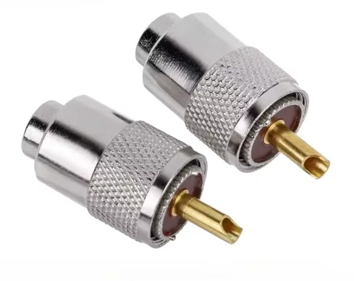
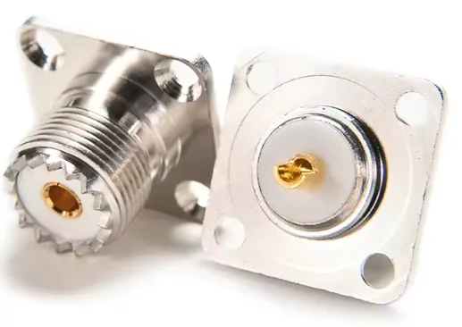
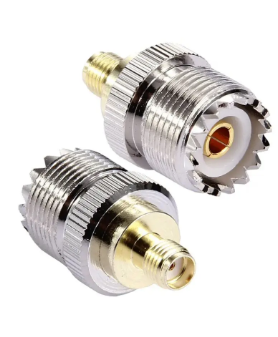
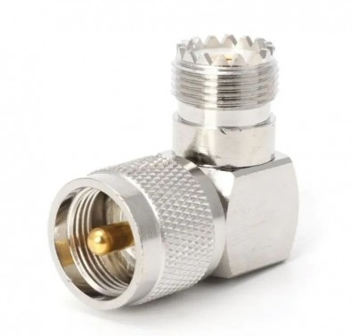
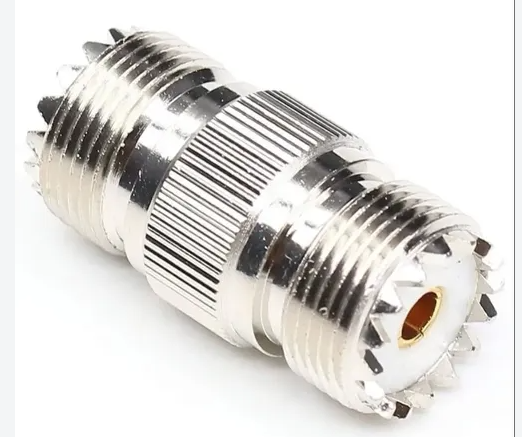
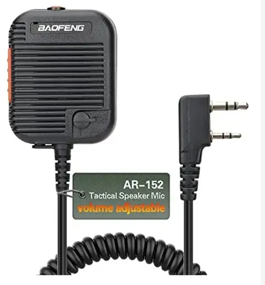
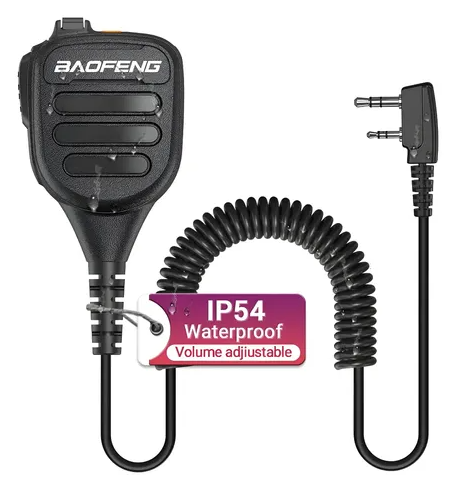
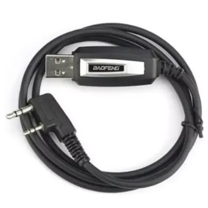
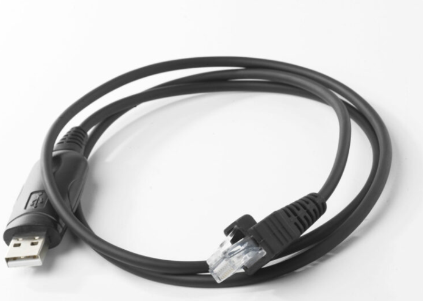
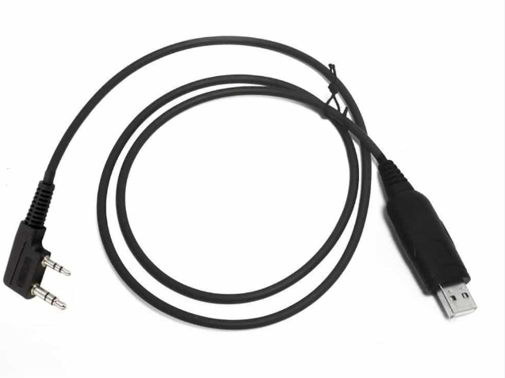

PL-259 · macho
Reconócelo por el pin central que sobresale. Se utiliza en el extremo del cable coaxial de la antena.
El pin entra en un SO-239 y la tuerca exterior se enrosca para sujetar la unión.
Partes y piezas
Conoce cada pieza, para qué sirve y qué revisar antes de comprar.

Aprende a reconocer el PL-259 y el SO-239 y cómo se conectan entre sí.

Reconócelo por el pin central que sobresale. Se utiliza en el extremo del cable coaxial de la antena.
El pin entra en un SO-239 y la tuerca exterior se enrosca para sujetar la unión.

Tiene un orificio central que recibe el pin del PL-259 y una rosca exterior donde se fija su tuerca.
La versión de la foto es de panel: sus cuatro orificios permiten fijarla a una caja o chasis. El contacto trasero se usa para realizar la conexión interna.
Así se conectan: PL-259 del cable → SO-239 del equipo o de la base de antena. Alinea el pin y enrosca la tuerca sin forzar.
Para conectar una antena, cuidar tu estación o unir dos cables. Mira los dos extremos antes de elegir.

Para tu handy
Adaptador SMA a SO-239
Permite conectar un cable terminado en PL-259 a una radio portátil con conector SMA compatible.
Antes de comprar: comprueba si tu radio necesita SMA macho o hembra. SMA y RP-SMA no son lo mismo: revisa también el contacto central y el modelo de tu radio.
Un tramo corto de cable flexible ayuda a evitar que un cable pesado fuerce el pequeño conector del handy.

Para tu estación
Codo de 90° PL-259 a SO-239
Orienta la salida del cable. Si lo dejas instalado en una radio con salida SO-239, puedes conectar y desconectar el cable sobre el adaptador, reduciendo el uso repetido del conector original.
¿Por qué sirve? si la conexión se desgasta con el uso, es más sencillo reemplazar el adaptador que reparar el conector de la radio.
Mantén el cable sujeto para que su peso no fuerce la conexión.

Para tus salidas
Copla SO-239 a SO-239
Une dos cables que terminan en PL-259 para alcanzar una antena más alejada. Es práctica en campamentos y montajes temporales al aire libre.
Así se conecta:
PL-259 del cable → copla → PL-259 del segundo cable.
La unión no es impermeable por sí sola: protégela de la lluvia y la humedad. Más cable y conexiones también añaden pérdidas de señal.
Micrófonos parlantes
La “perita” reúne micrófono, parlante y un botón para hablar, llamado PTT. Es cómoda para llevar el handy protegido y escuchar o transmitir sin sacarlo de la mochila.

Micrófono parlante con control de volumen y cable espiral. Permite escuchar y hablar desde la solapa o la correa de tu mochila.
Antes de comprar: confirma que el conector de dos pines sea compatible con tu radio. Esta ficha corresponde al micrófono, no al handy del mismo nombre.

Micrófono parlante con control de volumen. La referencia mostrada indica protección IP54: frente al polvo y las salpicaduras, no para sumergirlo.
Antes de comprar: verifica la clasificación IP54 del modelo ofrecido y su compatibilidad con tu radio. El micrófono no vuelve impermeable la conexión del handy.
Cables de programación
Sirven para conectar la radio al computador y cargar canales o ajustes mediante un programa compatible. No son cables de carga. Aunque dos conectores se parezcan, sus cables pueden funcionar de manera distinta.

Cable USB de programación con conector de dos pines para estos modelos, en su versión compatible.
Confirma que el vendedor incluya tu modelo exacto en la compatibilidad. El UV-17 Pro GPS requiere un programa que admita esa variante; no basta con que diga “UV-17”. Según el cable, también puedes necesitar instalar un controlador.

Cable USB específico para programar la estación móvil. Su extremo modular se conecta al puerto correspondiente de la radio.
Busca un cable de programación compatible con AT-778UV, como el PC51 indicado en su manual. Aunque el enchufe se parezca al de un cable de red, no se reemplaza por un cable Ethernet.

Cable de programación para la familia 878. Se utiliza con el software de programación, llamado CPS, correspondiente a la versión de tu equipo.
No lo confundas con el cable Baofeng: aunque ambos tengan dos pines, no son intercambiables para programación. Confirma la compatibilidad con tu versión del 878.